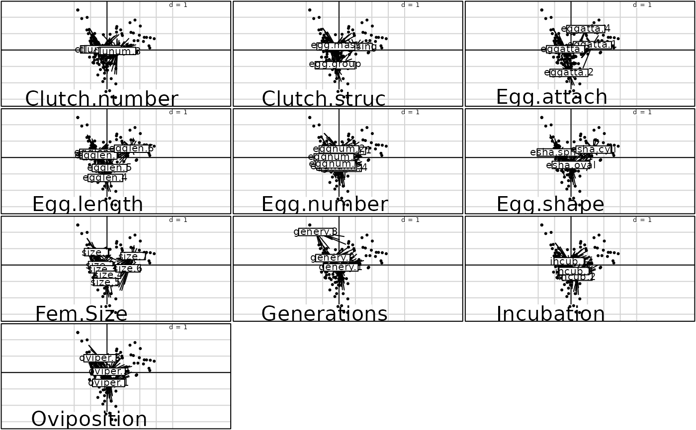

Fuzzy Correspondence Analysis and Fuzzy Principal Components Analysis
dudi.fca.RdTheses functions analyse a table of fuzzy variables.
A fuzzy variable takes values of type \(a=(a_1,\dots,a_k)\)
giving the importance of k categories.
A missing data is denoted (0,...,0).
Only the profile a/sum(a) is used, and missing data are replaced by
the mean profile of the others in the function prep.fuzzy.var. See ref. for details.
Arguments
- df
a data frame containing positive or null values
- col.blocks
a vector containing the number of categories for each fuzzy variable
- row.w
a vector of row weights
- scannf
a logical value indicating whether the eigenvalues bar plot should be displayed
- nf
if scannf FALSE, an integer indicating the number of kept axes
Value
The function prep.fuzzy.var returns a data frame with the attribute col.blocks.
The function dudi.fca returns a list of class fca and dudi (see dudi) containing also
- cr
a data frame which rows are the blocs, columns are the kept axes, and values are the correlation ratios.
The function dudi.fpca returns a list of class pca and dudi (see dudi) containing also
cent
norm
blo
indica
FST
inertia
References
Chevenet, F., Dolédec, S. and Chessel, D. (1994) A fuzzy coding approach for the analysis of long-term ecological data. Freshwater Biology, 31, 295–309.
Author
Daniel Chessel
Anne-Béatrice Dufour anne-beatrice.dufour@univ-lyon1.fr
Examples
w1 <- matrix(c(1,0,0,2,1,1,0,2,2,0,1,0,1,1,1,0,1,3,1,0), 4, 5)
w1 <- data.frame(w1)
w2 <- prep.fuzzy.var(w1, c(2, 3))
#> 1 missing data found in block 1
#> 1 missing data found in block 2
w1
#> X1 X2 X3 X4 X5
#> 1 1 1 2 1 1
#> 2 0 1 0 1 3
#> 3 0 0 1 1 1
#> 4 2 2 0 0 0
w2
#> X1 X2 X3 X4 X5
#> 1 0.5000000 0.5000000 0.5000000 0.2500000 0.2500000
#> 2 0.0000000 1.0000000 0.0000000 0.2500000 0.7500000
#> 3 0.3333333 0.6666667 0.3333333 0.3333333 0.3333333
#> 4 0.5000000 0.5000000 0.2777778 0.2777778 0.4444444
attributes(w2)
#> $names
#> [1] "X1" "X2" "X3" "X4" "X5"
#>
#> $row.names
#> [1] 1 2 3 4
#>
#> $class
#> [1] "data.frame"
#>
#> $col.blocks
#> FV1 FV2
#> 2 3
#>
#> $row.w
#> [1] 0.25 0.25 0.25 0.25
#>
#> $col.freq
#> [1] 0.3333333 0.6666667 0.2777778 0.2777778 0.4444444
#>
#> $col.num
#> [1] 1 1 2 2 2
#> Levels: 1 2
#>
data(bsetal97)
w <- prep.fuzzy.var(bsetal97$biol, bsetal97$biol.blo)
#> 17 missing data found in block 1
#> 14 missing data found in block 2
#> 28 missing data found in block 3
#> 8 missing data found in block 4
#> 5 missing data found in block 5
#> 19 missing data found in block 6
#> 10 missing data found in block 7
#> 5 missing data found in block 8
#> 2 missing data found in block 9
#> 12 missing data found in block 10
if(adegraphicsLoaded()) {
g1 <- plot(dudi.fca(w, scann = FALSE, nf = 3), plabels.cex = 1.5)
} else {
scatter(dudi.fca(w, scann = FALSE, nf = 3), csub = 3, clab.moda = 1.5)
scatter(dudi.fpca(w, scann = FALSE, nf = 3), csub = 3, clab.moda = 1.5)
}
#> Error in s.label(dfxy = dudi.fpca(w, scann = FALSE, nf = 3)$li, xax = 1, yax = 2, plot = FALSE, storeData = TRUE, pos = -3, plabels = list( cex = 0.75), csub = 3, clab = list(moda = 1.5)): non convenient selection for dfxy (can not be converted to dataframe)

if (FALSE) { # \dontrun{
w1 <- prep.fuzzy.var(bsetal97$biol, bsetal97$biol.blo)
w2 <- prep.fuzzy.var(bsetal97$ecol, bsetal97$ecol.blo)
d1 <- dudi.fca(w1, scannf = FALSE, nf = 3)
d2 <- dudi.fca(w2, scannf = FALSE, nf = 3)
plot(coinertia(d1, d2, scannf = FALSE))
} # }